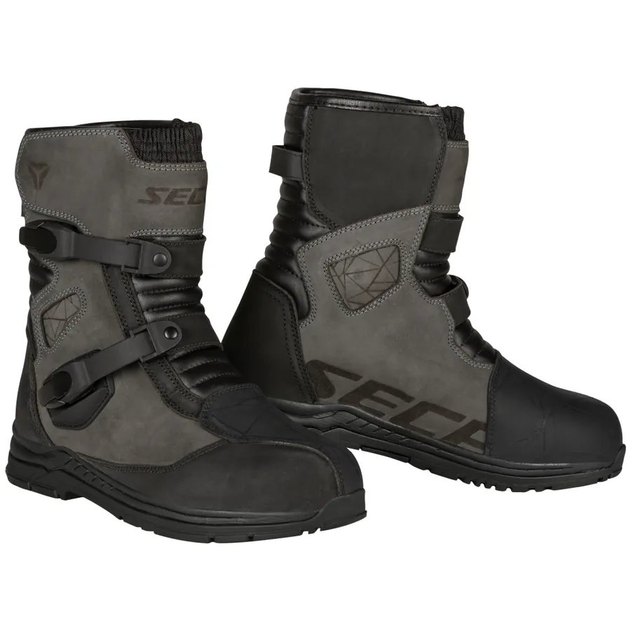

Férfi · Cipő, csizma
Seca S-ADV Grey Túrabakancs
Cikkszám: 4SDV24QQ-04
72 900 Ft bruttó
Most −45% a végösszegből a FINAL45 kuponnal.
Raktáron (1 db)
Méret
- 41 (nincs készleten)
- 42 (nincs készleten)
- 43 (nincs készleten)
- 44
- 45 (nincs készleten)
- 46 (nincs készleten)
- 47 (nincs készleten)
Világos: van készleten. Mérettáblázat ›
Szín
szürke
- Személyes átvétel
- ingyenes
- GLS házhoz, bankkártyával (Barion)
- 2 900 Ft
- GLS házhoz, utánvéttel
- 4 190 Ft
- MPL futár
- 7 990 Ft
Jellemzők
- Tartós, természetes nubuk bőr
- Vízálló és légáteresztő InsiDry® membrán
- Megmerevített sípcsont és sarokelemek
- A boka belső és külső részének védelme
- Fémcsatokkal rögzített cipő
- A lábat váltás közben védő panel
- Kétkomponensű, könnyű, rugalmas és ütéscsillapító EVA-hab talp
- Puha és légáteresztő bélés
- Rugalmas panelek
- ReflexLite® fényvisszaverők
- CE-minősítésű